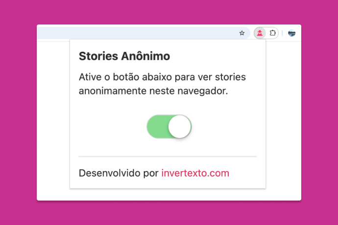

Como ver stories do Instagram anonimamente
Saiba como ver stories do Instagram sem a pessoa saber.

Quer assistir aos stories do Instagram sem deixar rastros? Seja por curiosidade, privacidade ou discrição, muitas pessoas preferem visualizar stories sem que o dono do perfil saiba.
A forma mais prática e segura de fazer isso é usando a extensão Stories Anônimo para o navegador Chrome.
Importante: Esta extensão funciona apenas em computadores (Windows, Mac ou Linux). Não há suporte para celulares ou tablets.
Por que ver stories anonimamente?
Existem diversos motivos pelos quais alguém pode querer assistir stories do Instagram de forma anônima:
- Manter sua privacidade e evitar que outros saibam do seu interesse;
- Acompanhar perfis de ex-parceiros, concorrentes ou conhecidos sem deixar rastros;
- Ver conteúdos de perfis públicos sem precisar seguir a pessoa;
- Evitar situações constrangedoras ou mal-entendidos;
- Pesquisar concorrência de forma discreta (útil para empresas).
Como funciona a extensão Stories Anônimo
A Stories Anônimo é uma extensão gratuita para navegador que permite visualizar stories do Instagram sem aparecer na lista de visualizações.
A extensão funciona bloqueando a requisição que informa ao Instagram que você visualizou o story. Dessa forma, você consegue assistir ao conteúdo normalmente, mas seu nome não aparecerá na lista de quem assistiu.
Principais recursos:
- Visualização totalmente anônima de stories;
- Funciona com perfis públicos e privados (se você já os segue);
- Interface simples e fácil de usar;
- Não requer instalação de aplicativos no celular;
- 100% gratuita e segura.
Passo a passo para usar
- Instale a extensão Stories Anônimo clicando aqui.
- Abra o Instagram pelo navegador Google Chrome no computador.
- Clique no ícone da extensão na barra de ferramentas do navegador.
- Certifique-se de que a extensão está ativada (o botão switch deve estar ligado).
- Navegue pelos stories do Instagram normalmente — a extensão funcionará automaticamente em segundo plano.
- Assista aos stories sem que seu nome apareça na lista de visualizações.
Dica: Você pode ativar ou desativar a extensão a qualquer momento clicando no ícone dela e alternando o botão switch. Quando desativada, os stories voltam a ser visualizados normalmente (com seu nome aparecendo).
Alternativas para ver stories anonimamente
Além da extensão, existem outras formas de visualizar stories de forma anônima:
- Sites de terceiros: Alguns sites permitem visualizar stories públicos, mas podem ser menos confiáveis;
- Criar uma conta falsa: Funciona, mas dá trabalho e pode violar os termos de uso do Instagram;
- Modo avião (método antigo): Já não funciona mais de forma eficaz.
A extensão Stories Anônimo continua sendo a opção mais prática, rápida e segura.
Limitações e cuidados
Embora a extensão seja eficiente, é importante estar ciente de algumas limitações:
- Não é compatível com celular;
- Para perfis privados, você precisa estar seguindo a pessoa;
- O Instagram pode atualizar suas políticas e afetar o funcionamento;
Conclusão
Ver stories do Instagram de forma anônima é possível e seguro quando você usa as ferramentas certas. A extensão Stories Anônimo oferece uma solução simples, gratuita e eficaz para quem busca mais privacidade ao navegar na rede social.
Se você valoriza sua discrição online, essa extensão pode ser uma excelente adição ao seu navegador.